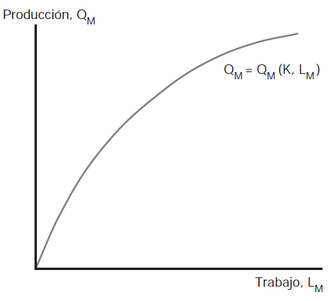
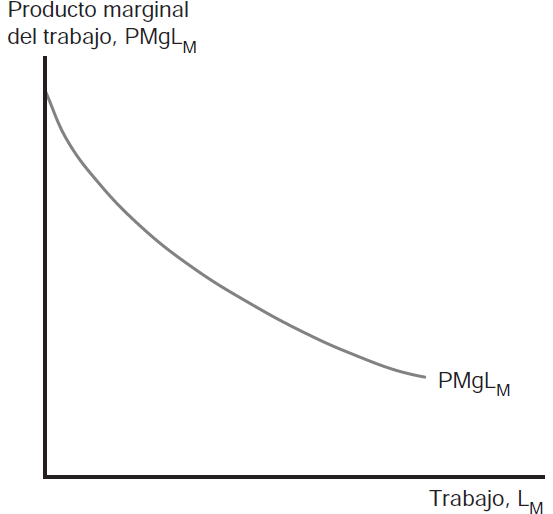

U2 (cont.) Modelo de factores específicos y distribución del ingreso
El que un factor se considere específico de un sector no debe ser entendido como un atributo (característica) inherente y absoluta sino más bien relativa y dependiendo del contexto. Podríamos decir que dada una suficiente cantidad de tiempo, todos los factores eventualmente son móviles [NOTA: Piense en cuán facil es reasignar un torno usado en la producción de automóviles en un tanque de cerámica usado en el proceso de producción de vino]


Producción y producto marginal
¿Qué está sucediendo cuando se reasigna trabajo entre sectores? Suponga que desplazamos 1 (una) persona-hora de \(L\) de la producción de \(A\) a \(M\), esa unidad de \(L\) aumentará la producción de \(M\) en \(PMgL_{M}\) (o lo que es equivalente, para aumentar la producción de \(M\) en 1 debemos aumentar la cantidad de \(L\) en \(1/PMgL_{M}\) horas. Al mismo tiempo, debemos reducir la producción de \(A\) en \(PMgL_{A}/PMgL_{M}\) unidades. La pendiente de la FPP es el costo de oportunidad de \(M\) en términos de \(A\) es igual a \(-\frac{PMgL_{a}}{PMgL_{M}}\). Y puede observarse porqué es cóncava: a medida que reasignamos todo el trabajo desde \(A\) a \(M\) el \(PMgL_{M}\) disminuye y el \(PMgL_{A}\) aumenta
Hay una relación importante entre precios relativos y producción. Partiendo de \(PMgL_{M}xP_{M}=PMgL_{A}xP_{A}=w\) y reagrupando en \(-PMgL_{A}/PMgL_{M}=-P_{M}/P_{A}\) puede observarse que en el equilibrio en la producción, la frontera de posibilidades de producción debe ser tangente a una línea cuya pendiente es el precio de las manufacturas dividido el precio de los alimentos
Cuando ambos precios aumentan en la misma proporción, no hay cambios reales en la economía –todos los involucrados (trabajadores, empresas y consumidores) están en la misma situación que antes del cambio
El factor específico del sector cuyo precio relativo aumenta está definitivamente mejor
El factor específico del sector cuyo precio relativo disminuye está definitivamente peor
El cambio de bienestar del factor móvil es ambiguo
Predicción. Al abrirse al comercio, una economía exportará el bien cuyo precio relativo haya aumentado e importará el bien cuyo precio relativo haya disminuido
Resultado. El comercio beneficia al factor que es específico al sector exportador de cada país pero perjudica al factor específico de los sectores que compiten con las importaciones; el efecto final sobre los factores móviles queda indeterminado
Implicancia. La razón principal por la que el comercio beneficia fundamentalmente a un país es porque amplía las opciones de elección de la economía